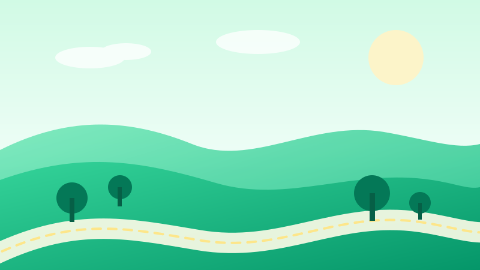
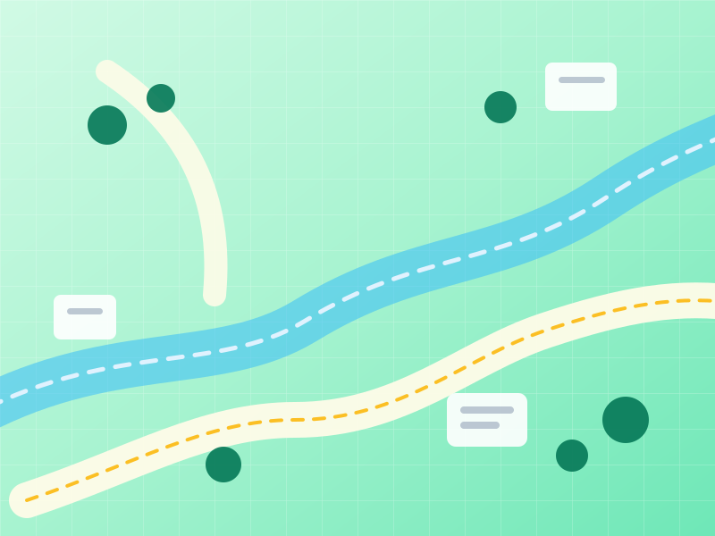

天府绿道
居民认养 · 共建共享

绿道地图
点击标记查看详情
我的绿色足迹
0 积分0
认养中
0
已上报
0
已解决
环保动态
问题上报
随手拍 · 共建美好绿道
现场照片
最多 3 张，清晰的照片有助于快速处理
上报类型
位置信息
当前环境无法获取定位，请手动描述位置。
详细描述
请勿填写个人敏感信息
0/500
提交成功后可在「我的记录」查看处理进度
绿道认养
选择一段绿道，成为它的守护者
认养详情
我的记录
上报与处理进度
0
全部
0
待处理
0
处理中
0
已解决
个人中心
绿
绿道守护者
正在加载…
0
积分
0
认养中
0
上报
天府绿道 · 居民认养计划 v1.0
我的认养
0
有效认养
0
本月待上报